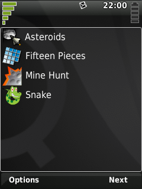

|
Home · All Namespaces · All Classes · Grouped Classes · Modules · Functions | |
Files:
The Content Filtering tutorial demonstrates some of the different ways the filtering criteria can be applied to a QContentSet. It also demonstrates using a QContentSetModel to display the contents of a QContentSet in a QListView and handling key events from a QSoftMenuBar.

The Content Filtering application displays a series of filtered views of content in the Document System. Users navigate through the views using the next label on the soft menu bar. The views are in order; all applications, applications in the Games category, documents with either the image/jpeg or image/png MIME type, and applications in the Games category and image/jpeg or image/png documents.
class FilterDemo : public QListView
{
Q_OBJECT
public:
FilterDemo( QWidget *parent = 0, Qt::WindowFlags flags = 0 );
protected:
void keyPressEvent( QKeyEvent *event );
private:
bool nextFilter();
int index;
QContentSet contentSet;
};
The FilterDemo class inherits from the only widget in the application; a QListView. It has a single event handler keyPressEvent() for handling the soft menu bar key presses, and another method nextFilter() for iterating through the different filters.
The FilterDemo constructor begins by initializing the QListView, the only thing we want to do here is set the horizontal scroll bar policy so the horizontal scroll bar is never shown.
FilterDemo::FilterDemo( QWidget *parent, Qt::WindowFlags flags )
: QListView( parent )
, index( 0 )
{
setWindowFlags( flags );
setHorizontalScrollBarPolicy( Qt::ScrollBarAlwaysOff );
In order to display the QContentSet in the QListView we need to construct a new QContentSetModel. There's no setup required so we simply create it and set it as the model for the QListView.
setModel( new QContentSetModel( &contentSet, this ) );
Next we want to initialize the QSoftMenuBar. We'll remove the label on the Select button as there is no select action and change the label on the Back button to Next.
QSoftMenuBar::menuFor( this );
QSoftMenuBar::setLabel( this, Qt::Key_Select, QSoftMenuBar::NoLabel );
QSoftMenuBar::setLabel( this, Qt::Key_Back, QSoftMenuBar::Next );
Finally we'll display the first filtered view.
nextFilter();
}
The keyPressEvent() event handler processes the key press events for the FilterDemo widget including those from the QSoftMenuBar. When the Back key is pressed it will call the nextFilter() method and accept the key event. If any other key is pressed or nextFilter() returns false it will let QListView handle the event, if handled by QListView the Back key will close the application.
void FilterDemo::keyPressEvent( QKeyEvent *event )
{
if ( event->key() == Qt::Key_Back && nextFilter() ) {
event->accept();
} else {
QListView::keyPressEvent( event );
}
}
The nextFilter() method applies a series of filtering criteria to the QContentSet. When no more filters are left it will return false.
The first filter includes all content with the QContent::Application role.
bool FilterDemo::nextFilter()
{
switch( index++ )
{
case 0:
contentSet.setCriteria( QContentFilter( QContent::Application ) );
return true;
The second filter restricts the existing filtering criteria to only content in the Games category.
case 1:
contentSet.addCriteria( QContentFilter::Category, "Games", QContentFilter::And );
return true;
The third filter replaces the existing criteria with one that includes all content with the image/jpeg MIME type, extends that to also include the image/png MIME type, and then restricts that set to content with the QContent::Document role.
case 2:
contentSet.setCriteria( QContentFilter::MimeType, "image/jpeg" );
contentSet.addCriteria( QContentFilter::mimeType( "image/png" ), QContentFilter::Or );
contentSet.addCriteria( QContentFilter( QContent::Document ), QContentFilter::And );
return true;
The final filter extends the previous one to also include applications in the Games category.
case 3:
contentSet.addCriteria( QContentFilter( QContent::Application )
& QContentFilter::category( "Games" )
, QContentFilter::Or );
Once the final filter view has been displayed, pressing the Back key will exit the application, so change the QSoftMenuBar label to indicate this before returning. Subsequent calls to nextFilter() will return false.
QSoftMenuBar::setLabel( this, Qt::Key_Back, QSoftMenuBar::Back );
return true;
default:
return false;
}
}
To install and run the Filter Demo example, carry out the following steps.
mkdir $HOME/src/filtering
cd $HOME/src/filtering
cp -r <Qt-Extended-source-directory>/examples/content/filtering/* .
chmod +w *
export QPEDIR=<Qt-Extended-build-directory>
$QPEDIR/bin/qbuild
$QPEDIR/bin/qbuild image
$QPEDIR/bin/runqtopia
| Copyright © 2009 Trolltech | Trademarks | Qt Extended 4.4.3 |